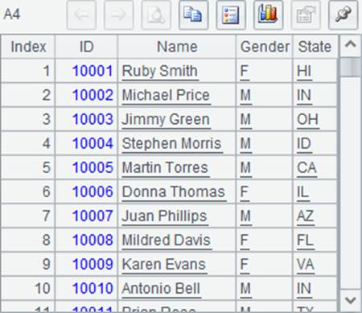
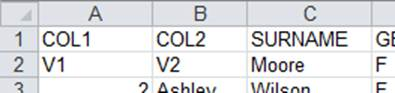
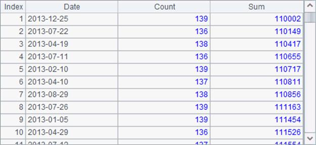
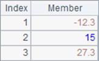
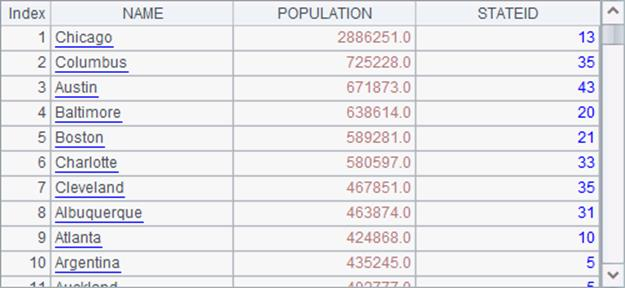
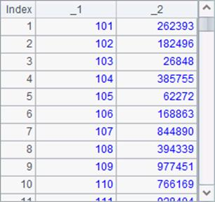
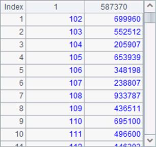

You can choose to skip this section if you are not a professional programmer. This won¡¯t affect your learning about the other contents of this Tutorial.
esProc ODBC supports external data sources that are data files with the commonly seen formats like txt, csv, xls and xlsx, that are esProc bin files, which are discussed in detail in Bin Files, and that the base table of a composite table, which is expounded in Generating a composite table.
You can also use a simple SQL statement in esProc ODBC to query an external table. For example:
|
|
A |
|
1 |
=esProcOdbc.query("select PName, SalesID, Date from Order_Electronics.txt where Amount>200000 and month(Date)=5") |
|
2 |
$(esProcOdbc) select Date, count(ID) as Count, sum(Quantity) as Sum from Order_Electronics.txt group by Date |
|
3 |
$(esProcOdbc) select Date, count(ID) as Count, sum(Quantity) as Sum from Order_Electronics.txt group by 1 |
|
4 |
$(esProcOdbc) select Date, count(ID) Count, sum(Quantity) Sum from Order_Electronics.txt group by Date having sum(Quantity)>110000 order by Sum |
To make a txt file an external table, use tab as the column separator.
A1 uses where to specify a query condition in the simple SQL statement to get the orders data where the sales in May are greater than 200,000. Here¡¯s the result:

The simple SQL statement in A2 groups data by Date using the group by clause and calculates the number of orders per day and the quantity of products sold per day using the aggregate functions count and sum, while naming certain fields in the result set with as. You can also use other aggregate function like max/min/distinct in a simple SQL statement. Here¡¯s the result set in A2:

In A3¡¯s simple SQL statement, instead of a field name, the group by is followed by the sequence number 1, which means grouping data by the first expression in the select part. This will get the same result as A2.
A4¡¯ query uses the having clause after group by to get records where the sum(Quantity) value is greater than 110,000 from the result set, omitts as and uses the order by clause at the end to sort the result set by Sum in ascending order. Here¡¯s the query result:

A simple SQL statement can join two external tables. For example:
|
|
A |
|
1 |
$(esProcOdbc) select StateId, Name, Abbr from states.txt |
|
2 |
$(esProcOdbc) select NAME,POPULATION,STATEID from Cities.txt |
|
3 |
$(esProcOdbc) select C.NAME,C.POPULATION, S.StateId, S.Abbr from states.txt S join cities.txt C on S.StateId=C.STATEID |
|
4 |
$(esProcOdbc) select C.NAME,C.POPULATION, S.StateId, S.Abbr from states.txt S left join cities.txt C on S.StateId=C.STATEID |
A1 and A2 retrieve data from states.txt and Cities.txt. Their results are as follows


A3 joins the two external tables to get records of cities whose states abbreviations can be found. Here¡¯s the result:

A4 uses a left join to get the following result:

An external table can be defined by a with, as shown in the following code:
|
|
A |
|
1 |
$(esProcOdbc) with C as (select*from cities.txt), S as (select * from states.txt) select C.NAME,C.POPULATION, S.StateID, S.Abbr from S join C on S.StateID=C.STATEID |
|
2 |
$(esProcOdbc) with C as (select * from cities.txt), S as (select * from states.txt), select C.NAME,C.POPULATION, S.StateID, S.Abbr into citiesInfo.txt from S join C on S.StateID=C.STATEID |
|
3 |
$(esProcOdbc) select * from citiesInfo.txt |
The query result in A1 is the same as that in A3 in the previous cellset.
A2 uses select¡into T¡ statement to store the query result in another external table T. You can retrieve the data from the external table T after the store is complete